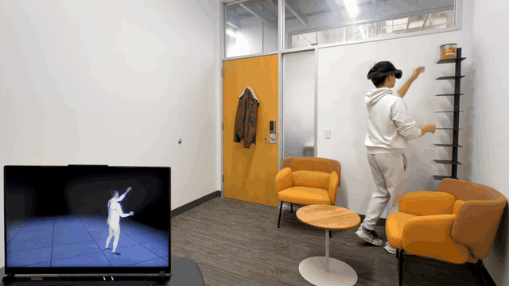
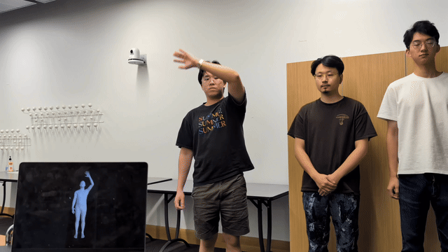
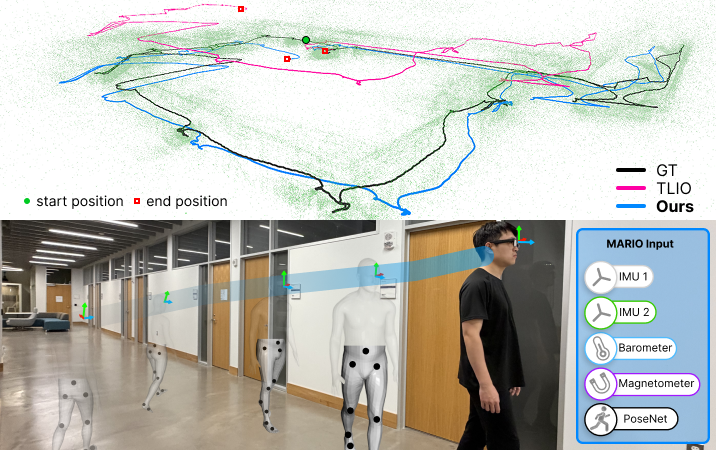

I am a PhD student at the University of Chicago advised by Prof. Hank Hoffmann and Prof. Karan Ahuja. Previously, I earned a B.Phil in Computer Science at the University of Pittsburgh.
My research interests lie at the intersection of embedded systems, machine learning, and HCI. I'm interested in developing novel systems to better understand, communicate and interact with the world around us.
I grew up in Sintra, a beautiful town in Lisbon (Portugal).
Selected Publications

FlowAvatar: Real-Time Full-Body Avatars from Sparse Egocentric Inputs on Consumer XR Devices
Chenfeng Gao, Taeyoung Yeon, Sungheon Park, Vasco Xu, Anish Prabhu, Mar Gonzalez-Franco, Karan Ahuja
ISMAR '26

ArmPoser: Real-Time, Calibration-Free Arm Pose Estimation from Smartwatch IMU
Bishnu Dev, Vasco Xu, Xi-Aan Loh, Chenfeng Gao, Henry Hoffmann, Karan Ahuja
SUI '26

MARIO: Motion-Augmented Real-Time Multi-Sensor Inertial Odometry
Yiquan Li, Taeyoung Yeon, Chenfeng Gao, Vasco Xu, Xuanyou Liu, Karan Ahuja
CVPR '26 Findings